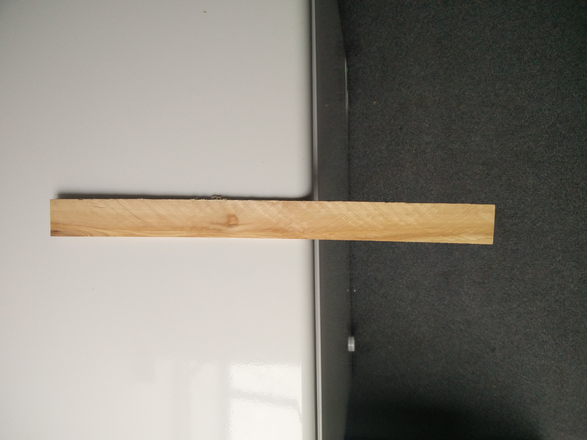
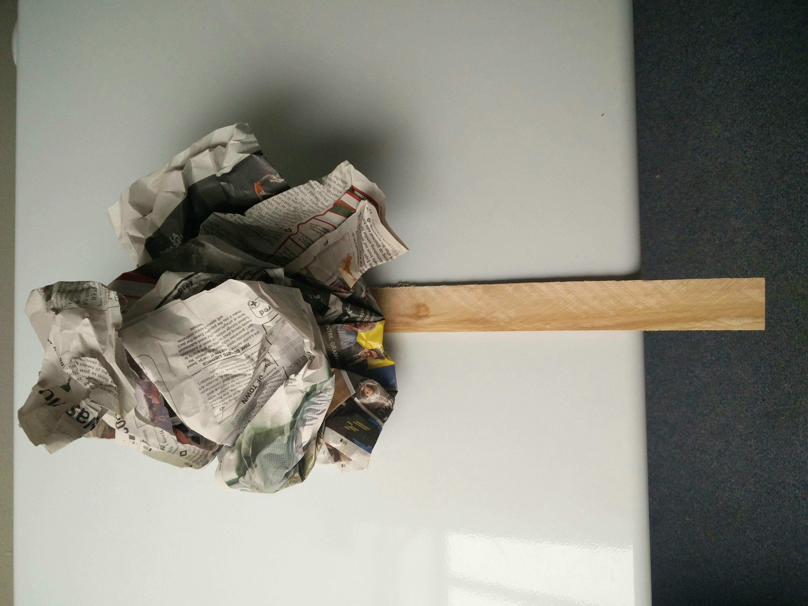
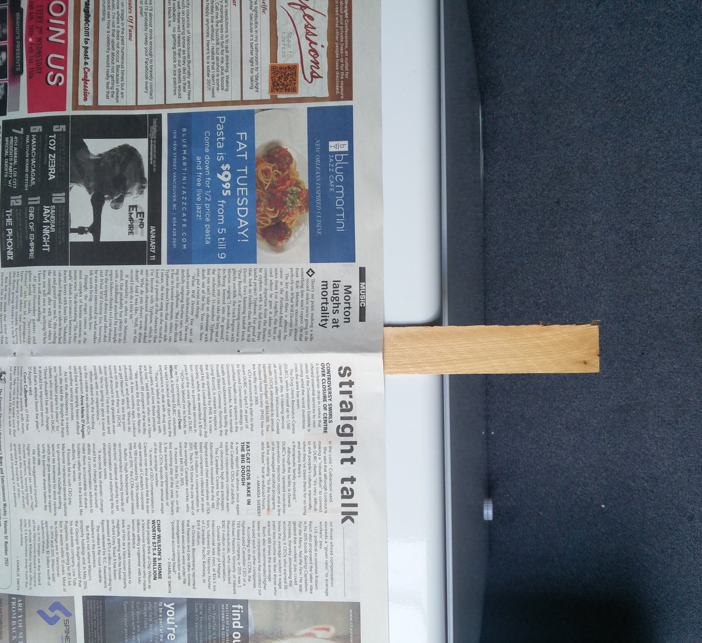

1 long table*
3 long wooden sticks (1/8th of an inch thick)
Multiple sheets of sturdy newspaper
1 pair of safety goggles
*If the classroom setup is not well suited for three sticks to be simultaneously placed on the table, the three scenarios can be done sequentially on a shorter table, as long as it is large enough that the newspaper does not overhang.
Make sure there is plenty of empty space between the table, and the nearest wall or object. Lie the first stick so that roughly half of it is on the table, and the other half is over the edge with nothing else supporting it. Repeat this process with each of the other two sticks, giving lots of space in between them. Leave the first stick with nothing overtop. Scrunch a few sheets of newspaper into a ball, and then place the balled up newspaper onto the second stick. For the third stick, spread open the second sheet of newspaper and lie it gently overtop; make sure the newspaper is primarily covering the part of the stick that is being supported by the table and that no air bubbles are under the newspaper. Using a finger, gently prod the first stick so that it tilts off the edge of the table. Pick it up and place it back in the same initial state, half off the table. Smack the unsupported half of the stick hard and it will go flying. Now move on to stick number two. Smack the unsupported half of the stick hard and both the stick and the ball of newspaper will go flying. Advance to the final stick. Smack the unsupported half of the stick and the stick will snap.
  Atmospheric pressure pushes on everything, in every direction. When the newspaper is flat against the table, there is minimal air underneath to push in the upward direction, the newspaper is not very thick so there is not a lot pushing on the sides, which means most of the air is pushing down from above. When force is applied down on the part of the stick overhanging the table, the other end wants to go up. When there is nothing on top of it the stick will fly away, but with the air pushing down on the flat newspaper there is enough resistance to snap the stick. The balled up sheets of newspaper, despite having more mass, have the air pushing on it from all directions: top, sides, and bottom. There is not a lot more pushing down than up, so the air pressure has no effect in this case and the stick and papers all fly away.
Hit the stick harder. It requires a good bit of force to actually snap the stick.
Lie the newspaper flatter. You want to minimize the amount of air underneath.
Turn the newspaper 90 degrees over the wood. Sometimes that seam of the paper is a nuisance.
Try a different kind of wood.